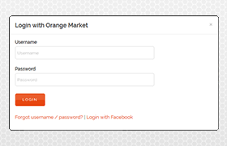

Encuentre respuestas a problemas comunes consultando la base de datos
de preguntas frecuentes, los recursos de documentación o poniéndose en contacto con
el soporte técnico.

Todas las solicitudes deben estar asociadas a una firma digital válida,
incluso si la petición es anónima. Si usted ha recibido una notificación de
error
de validación, es probable que las credenciales proporcionadas no sean
válidas. Si usted cree que debería tener acceso, póngase en contacto con el
soporte
técnico.
El procedimiento de translado
puede variar dependiendo de la extensión del dominio. Para
transferir un dominio genérico
póngase en contacto con su registrador actual solicitándole
que desactive el bloqueo de
transferencia. Por razones de seguridad, los dominios
genéricos poseen un código de
autorización denominado Auth Code, que su nuevo
registrador debe conocer para
solicitar el traslado. Este código debe ser proporcionado
por su actual registrador.
La garantía de satisfacción le
proporciona la opción de reintegro en todos los planes de
alojamiento compartido durante
un periodo no superior a 90 días. Además, si después de ese periodo
usted desea la
cancelación, le ofrecemos un
reembolso proporcional para cualquier servicio no usado.
Representan los recursos
intelectuales, estándares y valores corporativos que Orange Market
ha dispuesto en todos sus
productos de software. Instamos a cualquier parte externa que desee
usar los logos registrados y
otros materiales de Orange Market en relación con nuevos materiales
de diseño, publicidad online e
impresión y otros usos a observar las restricciones legales detalladas
en la Guía de Estilo de Orange
Market. Se prohíbe cualquier uso fuera de estas restricciones.
En la actualidad no es posible
acceder a los recursos API. Si usted tiene interés en explorar
las posibilidades de
aplicabilidad o tiene sugerencias al respecto, puede ponerse en
contacto con nuestro equipo
técnico.
La política de ciclo de vida del soporte provee consistencia y
predicibilidad para la
disponibilidad del soporte del producto cuando este es liberado o a lo largo
de su ciclo
de vida. Entendiendo el ciclo de soporte, nuestros clientes son capaces de
maximizar
la gestión de sus inversiones y planes estratégicos en IT.
El soporte general proporciona asistencia a las incidencias relacionadas
con la línea de productos y servicios adquiridos que se encuentren
sujetos a las condiciones de uso.
Por favor, tenga en cuenta que más allá del ciclo de vida de soporte del
producto, Orange Market no proporciona soporte general a los clientes
ni dan respuesta a consultas técnicas de forma gratuita.
Login for Support
Form
La asistencia técnica por chat le proporciona asesoramiento
para la resolución de incidencias en tiempo real, dando respuesta a cualquier
pregunta que pueda plantear. Puede consultar el horario de disponibilidad en las
condiciones de contratación del servicio.
Login for Live chat
Descargue y consulte la guía de estilo antes de utilizar cualquier material
gráfico de Orange Market o de su línea de productos de forma online o en
materiales impresos.
Download help
document